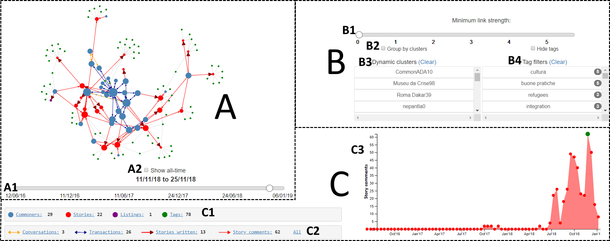
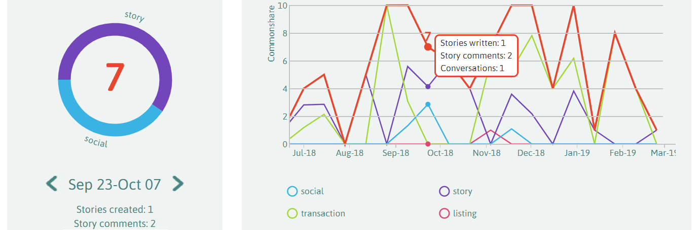

Javascript functions¶
commonfare.net data¶
Two sets of Javascript files are needed for the admin dashboard and the personal commonshare visualisations respectively.
Admin dashboard files¶
{kind=link}
admin.js¶
Main file containing functions for loading, drawing and interacting directly with the force-directed graph (A)
-
loadDataFiles(queue)¶ This loops through the data files folder until it can’t find any more. It then queues them all up and after that begins rendering them one by one.
Arguments: - queue (d3.queue) – structure from D3 library containing queued JSON files
-
mouseOverNode(d)¶ Define what happens when the user mouses over a node on the graph…
Arguments: - d (json) – JSON data of the hovered node
forces.js¶
Contains details of the two forces used to layout the network graph, and the functions to toggle between them.
-
toggleGroups(chk)¶ Switches the simulation between force-directed layout and clustered layout based on ‘checked’ status of chk
Arguments: - chk (checkbox) – HTML checkbox element
-
forceCluster(alpha)¶ Clustering function to bunch nodes that are in the same cluster together
Arguments: - alpha (float) – Current alpha value of simulation (begins at 1.0)
widgets.js¶
Functions that control the behaviour of the dashboard ‘widgets’ (e.g., sliders, list boxes, checkboxes) that adjust the graph in some way
-
toggleTags(chk)¶ Toggle whether to show/hide tag nodes and edges
Arguments: - chk (checkbox) – HTML checkbox element
-
toggleDate(chk)¶ Toggle whether to show the cumulative graph or the slider
Arguments: - chk (checkbox) – HTML checkbox element
-
populateListBoxes()¶ There are list boxes for both the dynamic communities and the tag names/counts. This function fills them with the data from the graph files
-
addDateSlider()¶ Add the ‘date slider’ allowing the user to go back and forth through the graphs over time
-
addStrengthSlider()¶ Add the slider that allows graph to be filtered based on link strength. When the graph is updated, this slider’s scale is updated in
updateStrengthSlider()
-
updateStrengthSlider(currentpos, maxval)¶ Updates the strength slider with new maximum value. This involves changing the tick positions as well as the x-position of the handle on the updated scale
Arguments: - currentpos (int) – position of handle on strength slider before updating
- maxval (int) – new maximum value of strength slider after updating
arrowgraphics.js¶
Functions for additional graphical elements of graph links - specifically, the rendering of arrow heads and multi-coloured dashed arrow lines
-
drawArrowHeads()¶ This draws the arrows to be drawn on either end of each link to show directionality.
-
addDashedArrowLines()¶ This allows the links between Commoners that have both transactions and conversations to have the blue-yellow dashed pattern.
areachart.js¶
Functions that render and update the area chart tracking the number of nodes/edges of different types over time
-
drawAreaChart()¶ Draws the area chart after loading all necessary data Defaults to show number of stories written over time
-
drawNewChart(type)¶ Redraws the area chart to show a different attribute plotted over time
Arguments: - type (string) – string representing type of attribute to plot (e.g., ‘listings’,’commoners’,’stories’ etc.)
-
areazoomed()¶ Zooming and panning function for the area chart. Recalculates tick numbers and positions, and position of filled area itself
Personal visualisation files¶
{kind=link}
personalvis.js¶
Some stuff in here about the personal visualisation
donut.js¶
Everything for drawing and interacting with the donut representation
-
donut.plotDonut(graphdata, mydata)¶ Called every time a new donut needs to be generated. Updates ‘graphdata’ to ensure links point to node data and not just node IDs, generates a JSON array of the Commoner’s interactions for each type, and positions the initial donut segments, labels, and commonshare value text
Arguments: - graphdata (json) – JSON representation of ego-centric graph of Commoner’s interactions
- mydata (json) – JSON representation of node-specific data of the Commoner
-
donut.updateDonut(value)¶ Function tied to the arrows on the donut date picker; updates donut to show donut for earlier or later actions
Arguments: - value (int) – sets whether to show earlier (-1) or later (1) donut
-
calculateTextPath(d, index)¶ Function to create the path of a donut arc’s text, by inspecting and modifying the path of the arc itself. Code from https://www.visualcinnamon.com/2015/09/placing-text-on-arcs.html
Arguments: - d (json) – JSON representation of the arc path
- index (int) – index of data being shown in the ‘data’ array
-
addInfoText(d)¶ Generates additional information text underneath the donut when user hovers over (desktop) or taps on (mobile) a donut segment. Text is dependent on type of data the segment represents
Arguments: - d (json) – Underlying JSON data of donut segment
-
interactionsOfType(d, key)¶ Finds links in the interaction graph coming from the Commoner in question, filters based on the given interaction type (e.g., story, social) and returns these in a JSON array
Arguments: - d (json) – JSON representation of all graph data at this time
- key (string) – string reprsenting interaction type to filter on
Returns: Array.<json> – - JSON array of interactions of type ‘key’
-
generateArcs(piesegments)¶ Positions the segments of the donut and their text labels based on a JSON array of interaction types, and adds all touch/hover/click listeners on the segments
Arguments: - piesegments (Array.<json>) – JSON array representing interaction types
-
generateBubbles(piesegments)¶ This generates the ‘bubble’ view of a Commoner’s interactions of a certain type, called when a donut segment is clicked or double-tapped on. Creates a bubble for each object interacted with (i.e., each story or each Commoner)
Arguments: - piesegments (Array.<json>) – JSON array of interactions specific to clicked segment
Positions commonshare value in the centre of the donut, which is dependent on its width
-
positionReturnText()¶ Centres ‘return’ text, which is also dependent on its width in a given language
linechart.js¶
Everything for drawing and interacting with the line chart representation
-
populateCore()¶ Populates the ‘kcorelist’ array with Objects that contain a date and the commonshare value at that time so that the commonshare line can be plotted
Returns: Array.<Object> – list of date/commonshare Objects
-
populateAvg()¶ For each interaction type (story/social/etc) maps its name to a nested object that contains both its name and its data values over time.
Returns: Object – interaction types mapped to Objects containing their ID and data values over time
-
plotLine()¶ Main function for drawing the axes in the correct position and adding the various lines onto the chart.
-
addLegend()¶ Calculates the position of legend elements and adds them to the chart. Code mainly from http://zeroviscosity.com/d3-js-step-by-step/step-3-adding-a-legend
-
legendClick(d)¶ Behaviour of legend items when they are clicked (i.e., hide/show their respective line and data points)
-
zoomed()¶ Zooming and translation function Repositions lines and adjusts x-axis tick spacing
-
mousemove()¶ Function that shows/hides different information when moving the mouse over the chart. Also updates the donut chart to show the current point being hovered over
All other data¶
Non-commonfare data doesn’t make use of many features in the network and personal visualisations. Trimmed-down files used for visualising generic data
are found in the js/generic/ directory. For example, the admin dashboard does not contain an area chart or tag filtering. Also, the personal visualisation
consists of only the line chart without the donut.
These files are commented but not documented with JSDoc as the function names and purposes are generally the same.